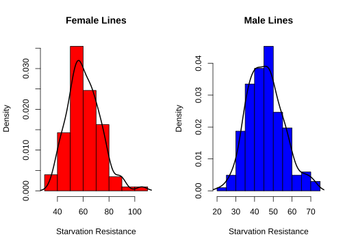
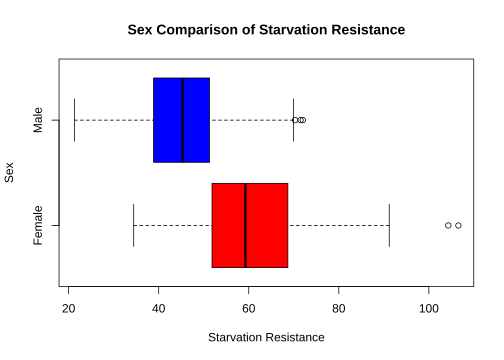
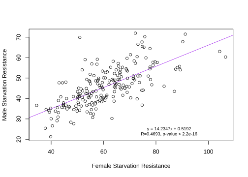
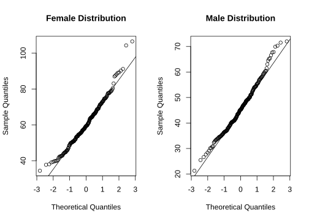
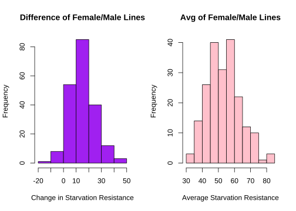
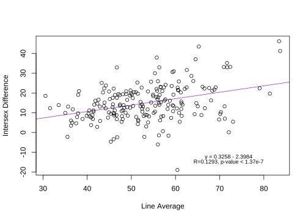

Last updated: 2022-11-22
Checks: 6 1
Knit directory: dgrp-starve/
This reproducible R Markdown analysis was created with workflowr (version 1.7.0). The Checks tab describes the reproducibility checks that were applied when the results were created. The Past versions tab lists the development history.
Great! Since the R Markdown file has been committed to the Git repository, you know the exact version of the code that produced these results.
Great job! The global environment was empty. Objects defined in the global environment can affect the analysis in your R Markdown file in unknown ways. For reproduciblity it’s best to always run the code in an empty environment.
The command set.seed(20221101) was run prior to running
the code in the R Markdown file. Setting a seed ensures that any results
that rely on randomness, e.g. subsampling or permutations, are
reproducible.
Great job! Recording the operating system, R version, and package versions is critical for reproducibility.
Nice! There were no cached chunks for this analysis, so you can be confident that you successfully produced the results during this run.
Using absolute paths to the files within your workflowr project makes it difficult for you and others to run your code on a different machine. Change the absolute path(s) below to the suggested relative path(s) to make your code more reproducible.
| absolute | relative |
|---|---|
| /data/morgante_lab/nklimko/rep/dgrp-starve/data/INPUT.txt | data/INPUT.txt |
| /data/morgante_lab/nklimko/rep/dgrp-starve/data/CHANGE.txt | data/CHANGE.txt |
| /data/morgante_lab/nklimko/rep/dgrp-starve/data/snpList.txt | data/snpList.txt |
| /data/morgante_lab/nklimko/rep/dgrp-starve/data/geneHits.txt | data/geneHits.txt |
Great! You are using Git for version control. Tracking code development and connecting the code version to the results is critical for reproducibility.
The results in this page were generated with repository version e82e73c. See the Past versions tab to see a history of the changes made to the R Markdown and HTML files.
Note that you need to be careful to ensure that all relevant files for
the analysis have been committed to Git prior to generating the results
(you can use wflow_publish or
wflow_git_commit). workflowr only checks the R Markdown
file, but you know if there are other scripts or data files that it
depends on. Below is the status of the Git repository when the results
were generated:
Untracked files:
Untracked: code/analysisSR.R
Untracked: code/geneGO.R
Untracked: code/multiPrep.R
Untracked: code/snpGene.77509.err
Untracked: code/snpGene.77509.out
Untracked: code/snpGene.77515.err
Untracked: code/snpGene.77515.out
Untracked: code/snpGene.sbatch
Untracked: data/eQTL_traits_females.csv
Untracked: data/eQTL_traits_males.csv
Untracked: data/goGroups.txt
Untracked: data/xp-f.txt
Untracked: data/xp-m.txt
Untracked: scoreAnalysisMulticomp.R
Untracked: temp.Rmd
Unstaged changes:
Deleted: analysis/database.Rmd
Modified: code/baseScript-lineComp.R
Modified: code/fourLinePrep.R
Note that any generated files, e.g. HTML, png, CSS, etc., are not included in this status report because it is ok for generated content to have uncommitted changes.
These are the previous versions of the repository in which changes were
made to the R Markdown (analysis/starve.Rmd) and HTML
(docs/starve.html) files. If you’ve configured a remote Git
repository (see ?wflow_git_remote), click on the hyperlinks
in the table below to view the files as they were in that past version.
| File | Version | Author | Date | Message |
|---|---|---|---|---|
| html | f09779e | nklimko | 2022-11-22 | Build site. |
| html | f1d6437 | nklimko | 2022-11-15 | Build site. |
| html | 79e98ca | nklimko | 2022-11-15 | Build site. |
| html | d23d7f7 | nklimko | 2022-11-11 | Build site. |
| Rmd | 3a282f1 | nklimko | 2022-11-11 | wflow_publish("analysis/*") |
| Rmd | 0ce7be4 | nklimko | 2022-11-10 | code sync |
| html | 0ce7be4 | nklimko | 2022-11-10 | code sync |
| Rmd | b90e540 | nklimko | 2022-11-09 | wflow_git_commit(all = TRUE) |
| html | b90e540 | nklimko | 2022-11-09 | wflow_git_commit(all = TRUE) |
| Rmd | 81037cc | nklimko | 2022-11-09 | html reworking, snp success |
| html | 81037cc | nklimko | 2022-11-09 | html reworking, snp success |
| Rmd | 41de4a8 | nklimko | 2022-11-08 | difMinus success, reframe for all four genotype analysis |
| html | 41de4a8 | nklimko | 2022-11-08 | difMinus success, reframe for all four genotype analysis |
| Rmd | d2abea6 | nklimko | 2022-11-05 | 11/5 Phase plan, data prep/analysis nested steps and pseudo for script |
| html | d2abea6 | nklimko | 2022-11-05 | 11/5 Phase plan, data prep/analysis nested steps and pseudo for script |
| Rmd | d0a5cb1 | nklimko | 2022-11-05 | Baseline analysis 11/5, horrendous formatting |
The lesser fruit fly, Drosophila melanogaster, is a model oganism due to short life cycles, small genomes that allow targetted manipulation, and analogous organ systems to humans. This allows for an accelerated rate of genetic testing and manipulation while bypassing major ethical concerns of experimenting on humans.
Extensive data collection has been performed on behavioral, fitness, and morphological traits for both male and female lines. In this project, I looked at starvation analysis between male and female lines in the DGRP.
The first step in this project was to determine which lines could be used for comparison. Not all lines have experimental data for every trait, so all lines with NA for starvation resistance had to be excluded as no comparisons could be made. After doing this, I created a table with line ID, male resistance, and female resistance. On top of this, I calculated the average resistance and the change in resistance between sexes and recorded these in additional columns.
In order to get a better understanding of what I was working with, I plotted the data using various methods.

Plotting histograms of each sex reveals both are unimodal with mild skew to the right. This skew demonstrates he effect of selective pressures as low starvation resistance decreases overall fitness of the fly.

Plotting the distributions on the same axis gives a more accurate representation of distribution between sexes. The average female has a much greater starvation resistance of 60.665 compared to the average male 45.732. Outliers to the right of both boxplots confirm right skew seen in the histograms.

The trendline is a simple linear regression with R and p values extracted from summary statistics. The slope indicates a positive correlation between male and female starvation resistance while the R value of 0.4693 indicates that the correlation is not strong.

There is some systematic deviation from linearity on both tails in females and on the upper tail in males. In order to more accurately assess normality, I found the Shapiro-Wilk Test for normality and chose his method due to its retention of power and prior implementation in R.
The test statistic formula for the Shapiro-Wilk test is: \[ W = \frac{(\sum_{i=1}^{n}a_ix_{(i)})^{2}}{\sum_{i=1}^{n}(x_i-\overline x)^{2}} \]
More about the Shapiro-Wilk test statistic can be found here. The closer this statistic is to 1 indicates how normal a distribution is, with 1 being perfectly normal.
Shapiro-Wilk normality test
data: Female_Starvation
W = 0.97662, p-value = 0.001826
Shapiro-Wilk normality test
data: Male_Starvation
W = 0.98745, p-value = 0.07023The W values indicate that both samples are mostly normal with slightly more deviation in females than in males.
At an \(\alpha\) level of 0.05, we have sufficient evidence to reject that the Female population is normally distributed as p < \(\alpha\) (0.001826 < 0.05).
At an \(\alpha\) level of 0.05, we do not have sufficient evidence to reject that the Male population is normally distributed as p > \(\alpha\) (0.07023 > 0.05). Notably the correlation is not strong as the p-value is close to 0.05.
In order to dig durther into starvation resistance, I started looking for possible trends between difference in starvation resistance and average resistance per line.
 The histograms of each reveal another unimodal distribution. What I did not expect was to see any negative values in line difference. These lines had males with higher starvation resistance than females.

There is almost no correlation between the traits as R is 0.1293 for the trendline. This plot was mostly for practice with scatter plots and linear regression.
The histograms, however, led in another direction. I figured that looking at the extremities of differences and averages was correlated to some genetic difference. I began by extracting the line IDs of each group of interest(inGroups) to separae files to run further analyses.
Example line extraction for the negative male difference is shown here:
# Lines with male SR high than female SR
difMinus <- starve %>% filter(dif < 0) %>% arrange(line) %>% select(line)
difMinus <- as.data.table(difMinus)
fwrite(difMinus, "./data/difMinus.txt")The four groups of interest created were: - avgMinus: Lines with low average starvation resistance - avgPlus: Lines with high average starvation resistance - difMinus: Lines with higher male than female starvation resistance - difPlus: Lines with higher female than male starvation resistance
With these groups, I wanted to look at SNP variation in the ingroup and compare SNP prevalence to the remainder of the lines. I reasoned that any locus that varies dramatically between ingroup and outgroup may contribute to starvation resistance.
The math behind this operation looked at the average SNP value for each group at each locus and copmuted the difference. High differences(closer to 2) indicate that a SNP existed in one group at much higher rates than the other. The data was then ordered by absolute value to catch cases where the ingroup had an snp across lines and where all lines had an untouched region.
This template was used on each ingroup to find SNPs of interest using the methodology above.
##change per job
dataPath <- "/data/morgante_lab/data/dgrp/genotypes/dgrp2_tgeno_filtered_meanimputed.txt"
targetPath <- "/data/morgante_lab/nklimko/rep/dgrp-starve/data/INPUT.txt"
finalPath <- "/data/morgante_lab/nklimko/rep/dgrp-starve/data/CHANGE.txt"
#number of results to save
finalCount <- 200
#files read in
data <- fread(dataPath)
inGroup <- fread(targetPath)
#modification of inGroup to vector type, clunky
inGroup <- inGroup[,line]
#IDs saved and removed
var_id <- data[,var_id]
data <- data[, var_id:=NULL]
#data partitioned by column
inData <- data[,colnames(data) %in% inGroup, with=FALSE]
outData <- data[,!(colnames(data) %in% inGroup), with=FALSE]
#means calculated for every row
inMean <- rowMeans(inData)
outMean <- rowMeans(outData)
#table constructed of marker IDs and group means
phaseA <- data.table(var_id, inMean, outMean)
#calculates difference of group means
trueData <- phaseA[, result:=inMean - outMean]
#orders data by absolute value of difference, largest first
trueSort <- trueData[order(-abs(result))]
#index controls number of top results to save
finalSet<- trueSort[1:finalCount]
#writes top (finalCount) to designated path
fwrite(finalSet, finalPath)After this job was run, I compiled all four groups into a single data sheet and keyed them to the original group they had come from to streamline data analysis.
# Set max number of results
index <- 50
#read in "index" number of results, set above
dM <- fread("../data/difMinus-result.txt", nrows = index)
dP <- fread("../data/difPlus-result.txt", nrows = index)
aM <- fread("../data/avgMinus-result.txt", nrows = index)
aP <- fread("../data/avgPlus-result.txt", nrows = index)
#mark origin of SNP
dM[,ori:="difMinus"]
dP[,ori:="difPlus"]
aM[,ori:="avgMinus"]
aP[,ori:="avgPlus"]
#combine tables
snpList <- rbind(dM, dP, aM, aP)
#remove data columns by assigning to NULL
snpList[,':='(inMean=NULL, outMean=NULL, result=NULL)]
#Save file
fwrite(snpList, "/data/morgante_lab/nklimko/rep/dgrp-starve/data/snpList.txt")With this list of SNPs, I wanted to match the SNPs to their location in the D. melanogaster genome. This was done by joining the SNP compilation table to the Flybase gene boundary table in order to extract gene codes in the FlyBase gene format(FBgn0000000).
### Libraries
library(data.table)
library(dplyr)
library(stringr)
#input paths
genePath <- "/data/databases/flybase/fb-r5.57/fb-r5.57.clean.gene.bound"
snpPath <- "/data/morgante_lab/nklimko/rep/dgrp-starve/data/snpList.txt"
#read data in
genBank <- fread(genePath, col.names = c("leg","start", "stop", "strand","gene"))
snpList <- fread(snpPath)
#split SNP tag to search gene data correctly
snpList[, arm := tstrsplit(var_id, split="_",fixed = TRUE)[1]]
snpList[, pos := tstrsplit(var_id, split="_",fixed = TRUE)[2]]
snpList[, pos := as.numeric(pos)]
#set start and stop to numeric type
genBank[, ':='(start=as.numeric(start), stop=as.numeric(stop))]
#extract gene where position contained and arm matches
geneHits <- genBank[snpList, on = .(start <= pos, stop >= pos,leg==arm), .(ori, geneFind = gene)][!is.na(geneFind)]
#write file
fwrite(geneHits, "/data/morgante_lab/nklimko/rep/dgrp-starve/data/geneHits.txt")For my final data.table, I matched extracted genes to their corresponding GO terms in the flybase gene_go.table file. From there, I summarized the GO terms present within each group to determine what processes or structures were most affected that could potentially cause observable differences in starvation resistance between lines. amiGO browser
Extracted GO terms using code below
#No origin
table(genList[,mf])
table(genList[,cc])
table(genList[,bp])
##This one
table(genList[,gene, by=ori])
table(genList[,mf, by=ori])
table(genList[,cc, by=ori])
table(genList[,bp, by=ori])Fix GO Term Extraction.
Theoretically, this analysis could also be applied to gene expression instead of SNPs as an initial step and follow through with the same material. Gene expression and SNP data could be compared to see which functions are affected by both or only one group
On a different track, multiple regression using other traits in the eQTL csv would be a logical next step. Probably should have attempted this with one of the sugar traits.
Altogether, I realized that I strayed from a purely statistical analysis to more of a GWAS. That aside, this project has been good practice for using data.table and Rmarkdown. Most of the initial scripting and some of the later scripts are hard-coded to these examples which is not great is I wanted to extend this analysis to other traits.
sessionInfo()R version 4.0.3 (2020-10-10)
Platform: x86_64-pc-linux-gnu (64-bit)
Running under: CentOS Linux 7 (Core)
Matrix products: default
BLAS/LAPACK: /opt/ohpc/pub/Software/openblas_0.3.10/lib/libopenblas_haswellp-r0.3.10.dev.so
locale:
[1] LC_CTYPE=en_US.utf-8 LC_NUMERIC=C
[3] LC_TIME=en_US.utf-8 LC_COLLATE=en_US.utf-8
[5] LC_MONETARY=en_US.utf-8 LC_MESSAGES=en_US.utf-8
[7] LC_PAPER=en_US.utf-8 LC_NAME=C
[9] LC_ADDRESS=C LC_TELEPHONE=C
[11] LC_MEASUREMENT=en_US.utf-8 LC_IDENTIFICATION=C
attached base packages:
[1] stats graphics grDevices utils datasets methods base
other attached packages:
[1] tidyr_1.2.0 stringr_1.4.0 data.table_1.14.2 dplyr_1.0.8
[5] workflowr_1.7.0
loaded via a namespace (and not attached):
[1] Rcpp_1.0.8.3 highr_0.9 bslib_0.3.1 jquerylib_0.1.4
[5] compiler_4.0.3 pillar_1.7.0 later_1.3.0 git2r_0.30.1
[9] tools_4.0.3 getPass_0.2-2 digest_0.6.29 jsonlite_1.8.0
[13] evaluate_0.15 tibble_3.1.6 lifecycle_1.0.1 pkgconfig_2.0.3
[17] rlang_1.0.4 DBI_1.1.2 cli_3.3.0 rstudioapi_0.13
[21] yaml_2.3.5 xfun_0.30 fastmap_1.1.0 httr_1.4.2
[25] knitr_1.38 generics_0.1.2 sass_0.4.1 fs_1.5.2
[29] vctrs_0.4.1 tidyselect_1.1.2 rprojroot_2.0.3 glue_1.6.2
[33] R6_2.5.1 processx_3.5.3 fansi_1.0.3 rmarkdown_2.16
[37] purrr_0.3.4 callr_3.7.0 magrittr_2.0.3 whisker_0.4
[41] ps_1.6.0 promises_1.2.0.1 htmltools_0.5.2 ellipsis_0.3.2
[45] assertthat_0.2.1 httpuv_1.6.5 utf8_1.2.2 stringi_1.7.6
[49] crayon_1.5.1